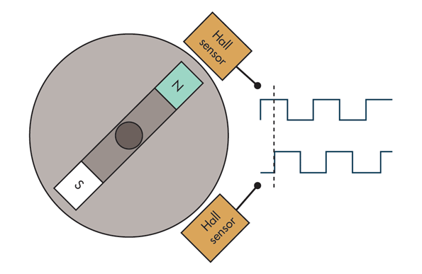
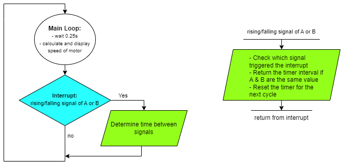
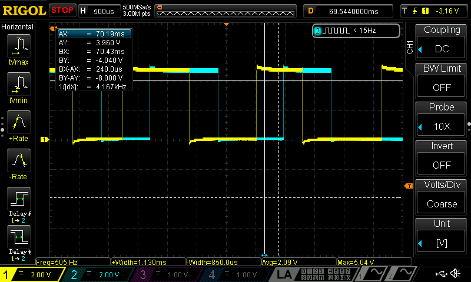
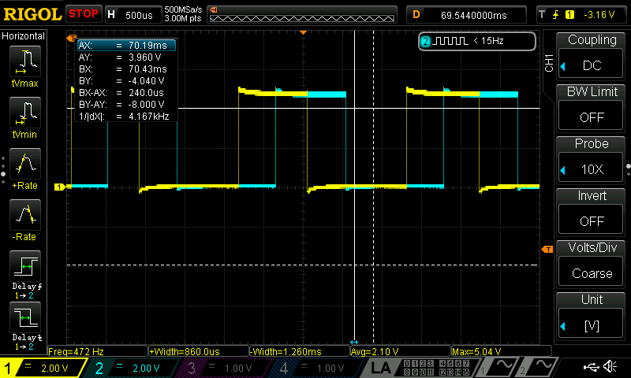
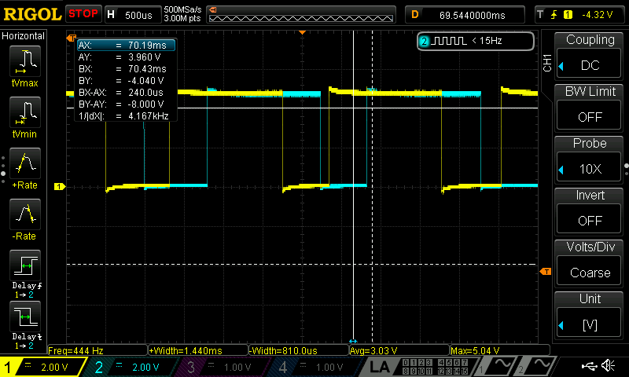
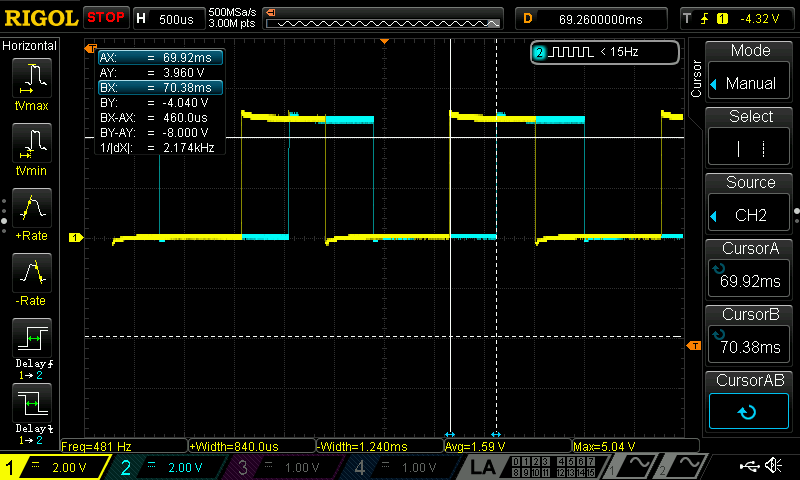

Lab 5: Interrupts
Introduction
In this lab we were tasked with using our stm32 MCU to determine the speed of a motor by reading from a quadrature encoder.
Lab Overview
The goal of this lab was to use interrupts to to interface with the quadrature encoder and calculate the speed of a motor. The interrupts needed to be triggered on the edges of the encoder pulses so that we could accurately find the duration between pulses. Lastly our design needed to display the speed and direction of the motor to the user at a rate of at least 1 Hz.
What is a quadrature encoder
An encoder is a device that converts a set of inputs into a binary code output. A quadrature encoder is an encoder that is used to measure the angle of a motor. It can be designed a few ways. The ones in lab used hall effect sensors seen in the image below.

As the motor spins the hall effect sensors will output a square wave. The two sensors are seperated by 90 degrees meaning the two respective square waves are 90 degrees out of phase. We can then use this to find the period between the rising or falling edges and use that to calculate the speed of the motor.
MCU Design
Setup
In this lab we were allowed to use the CMSIS library meaning we no longer had to design structs for each register used in this lab. However we still need to need to make our own register specific functions which we can pull from our growing library we started last lab.
In this lab we needed to continually check if the two signals from the encoder were rising or falling. One way to do that would be to use polling. This would mean in our main loop we could have manually checked if the GPIO pin connected to the encoder output changed. However there is a large issue with polling which is that the all the logic in the while loop takes time to evaluate, meaning that when you check for GPIO you could miss the signal if the other part of your main loop are running. We need a way to immediately raise a flag if our the input changes. Luckily this is where interrupts come in. Interrupts are a way to tell the MCU to give immediate attention if a signal is changed. We can input our encoder signal and then whenever the signal has a risign or fallign edge the MCU will immediately run a service routine that executes some small but crucial code.
The first part of the MCU design was to enable the GPIO pins that will read in the quadrature encoder. In this lab PA6 and PA8 were used. I originally was going to use PA5 and PA6 however the encoder outputs 5 V signals and PA5 is only rated for 3.3 V. These pins were then enabled and set as input. Afterwards two timers were initiated. TIM2 was used as a delay timer that counted at a frequency of 1 kHz (period of 1ms) and TIM6 was used as timer to measure the time between the encoder signals. Given that it was measuring relatively quick signals I wanted to the frequency to be much faster so it was prescaled to 1 MHz (period of 1 us).
The interrupts were then enabled using RCC and setting the configuration and mask register so that PA6 and PA8 would trigger an interrupt. The interrupts were then set to trigger on both the falling and rising edge of the signal. Lastly the Nested Vectored Interrupt Controller was configured to allow the CPU to respond to interrupt lines 9 through 5 thus including 6 and 8 which correspond to our pins.
The specific service routine under the function prototype void EXTI9_5_IRQHandler(void); could then be configured to whatever logic we wanted to apply in the interrupt.
Interrupt Design
Once an the interrupt is triggered and service routine funciton is called the first thing to do is check which pending register was enabled as this tells the code if the signal came from PA6 or PA8. If both PA6 and PA8 are at the different values TIM6 is reset back to a count of zero and then when PA6 and PA8 are at the same value either high or low the current count of TIM6 is saved to a global variable called delta. The flow chart is included below.

Loop Design
The most important function in the main loop is calculating the speed of the motor. The speed is calculated in terms of revolutions per second based on the time between edges we recieve in the interrupts. The main loop is also in charge of printing the speed using printf() and causing a delay of around 250 ms so that we don’t printf too rapidly. Lastly we check the time between edges and if there is too much seperation we assume the motor is off and set the speed to zero.
Calculations
The main calculation in this lab was using delta which is the timer count corresponding to a quarter wave period to a motor speed. We know we want revolutions per second \(\frac{r}{s}\). From the data sheet we know there is 120 pulses per rotation \(120 \frac{p}{r}\). Therefore we can use \(\frac{r}{p}*\frac{p}{s} = \frac{r}{s}\). To find \(\frac{p}{s}\) the first thing we can do is take the quarter wave count and multiply it by \(4\) to get the full wave count. We then divide it by \(1,000,000\), which is our clock frequency, to get the period of a full pulse wave in seconds \(\frac{s}{p} = \frac{4\Delta}{1000000}\). We then know \(\frac{r}{s} = \frac{1000000}{4\Delta} * \frac{1}{120} = \frac{1000000}{480\Delta}\). We can use this equation in our main while loop to calulate the revolutions per second.
Performance
To verify the design for this lab we can compare our calculated revolutions per second to the oscilloscope readings. One thing I noticed when measuring with the oscilloscope was that the frequency varied a lot. Below are some images of the oscilloscope measuring the same 5 V driven motor.



From these images you can see that the frequency jumps around a little bit meaning the motor does not stay at one constant speed.
I ended up measuring the time between pulses on the scope below and found a quarter period of 460 us.

Using 460 us we found that the motor is spinning at a rate of 4.529 rev/s. When our MCU code ran the program on the same 5 V motor our speed fluxuated similar to the oscilloscope frequency readings but stayed around 4.46 rev/s. I has happy with the small error and believe some of the error could be due to the fact that the motor is not always spinning at the same frequency.
Outcome
From the video below you can see the quadrature encoder motor spinning and the printing speeds on the screen. Not displayed in the video is the power supply controlling the motors speed. In the video I vary the voltage applied to the motor and we can see that the the printed speed varies accordingly. Additionally one feature that took a while to implement was displaying when the motor was off and had a speed of zero revolutions per second, but in the video we can see when the motor turns off the display quickly notifies you that the motor has a speed of zero.
This lab, while in hindsight was not as complex as it seemed in the moment, was a great introduction to using interrupts and made me more comfortable knowing when and how to use them. In the future I would want to work on using more velocity smoothing as this motor seems to fluxuate its speed by small amounts which is apparent in the video.
Time in Lab: 15 Hours.